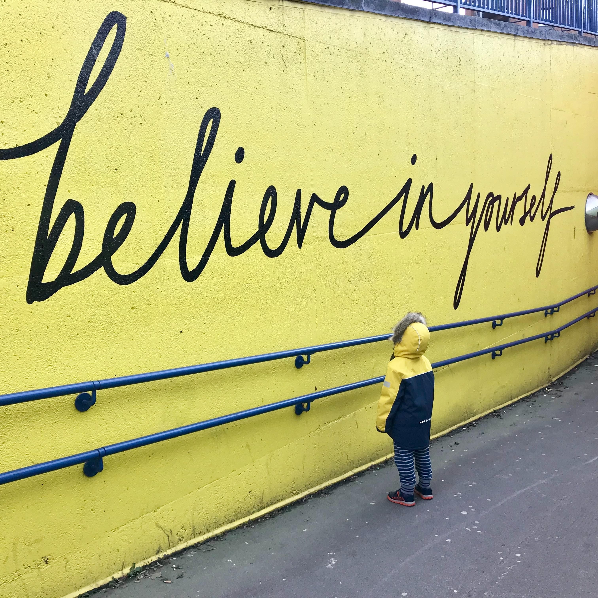

No te vendas, muéstrateDon't sell yourself, show yourself

Hace unas semanas terminé un proceso de transformación que me ha llevado más de 4 años. Lo hacía asistiendo a mi primer evento presencial grande, la Tarugo 22. Fue el último esfuerzo, comprar una entrada meses antes para asistir solo a un evento sin saber si iba a conocer a alguien. Y terminó con una gran recompensa personal, participando en una gran celebración, sintiéndome una pequeña parte de una comunidad muy bonita, disfrutando mucho del evento y recordando el proceso que me llevó hasta allí y de lo vivido en el camino.
Para entender esta transformación es necesario saber el origen. Soy introvertido y desde que tengo recuerdo he sido muy inseguro, con miedo a equivocarme, al rechazo, a lo que los demás puedan pensar o decir de mí. Esto me llevó durante mucho tiempo a vivir en modo T-Rex, quedándome muy quieto para que nadie pudiera verme. Pero a la vez sufría porque quería hacer cosas, estar con gente, participar, ser aceptado. Quería ser visto.
Ser introvertido no significa que no te guste estar con gente. Significa consumir energía porque, mientras una parte de ti disfruta de ello, otra en segundo plano no para de analizar cada cara, gesto, palabra, cada cosa que dices, para saber si la has liado, intentando averiguar qué están pensando sobre ti. Significa que seguramente después pasarás gran parte de la noche dando vueltas a un comentario y lo que podrías haber hecho al respecto o la impresión que habrás dado. Significa acabar exhausto y que un pequeño incidente te deje KO pensando que para qué te metes en esos jaleos y que nunca más. Al menos, eso ha sido gran parte de mi vida para mí.
Durante muchos años fui un consumidor en la sombra de la comunidad tech, admirando a gente de nuestro sector, siguiendo lo que decían, viendo las charlas online, pero sin atreverme nunca a tomar una posición activa. Seguía en ese modo T-Rex y seguía sufriendo cada vez que me apetecía preguntar, participar, aportar y no podía. Me encanta nuestra profesión, aprender y compartir lo que sé, pero eso estaba en gran parte vetado para mí.
Hace unos años esto cambió gracias a que encontré a gente maravillosa que me tendió la mano para enseñarme y acompañarme. Por ello siempre les estaré agradecido. Asistí a meetups, empecé a escribir, participé en comunidades, di alguna charla. Me di cuenta de lo bonito que es mostrarse y es lo que quiero contar hoy.
La marca personal y el saber venderse.
Hace ya bastantes años que se puso de moda el concepto de marca personal y con ella volvió uno de esos mensajes que te repiten una y otra vez en el mundo profesional: hay que saber venderse.
Debo reconocer que este mensaje nunca me gustó, e incluso me generaba cierto rechazo. Seguramente aquí entran prejuicios y malos entendidos, pero es algo que nunca conectó conmigo. Para mí saber venderse implicaba mostrar una visión irreal de ti, perfecta, bien porque eras un súper experto en algo (lo cual nunca he sido) o por exagerar tus habilidades. Significaba competir, ponerte por encima de los demás. Significaba hacer A para conseguir B. Yo quería empezar a ser más activo e investigué sobre este tema pero no me convencía por todos estos motivos.
Recuerdo en aquella época hablar sobre estos temas con mi amiga Lourdes, que llevaba la parte de Marketing y Comunicación de la empresa. Recuerdo que me decía que tenía que ser más activo en redes como LinkedIn, y yo contestarle que si empezaba a estar más activo en LinkedIn se preocupara, porque en ese caso no estaría creando marca, sino buscando trabajo.
Y este es nuestro sector. Vivimos en una realidad en donde en la mayoría de los casos, sin hacer nada especial, nos vienen a buscar y no tenemos que hacer ningún esfuerzo por destacar e ir a buscar fuera. Pero esto es un arma de doble filo. Porque sin hacer ese esfuerzo consciente no sabemos si el que nos viene a buscar es el que a nosotros nos conviene y el que nos va a llevar hacia donde queremos dirigirnos. Tampoco sabemos si lo que vemos alrededor es representativo de la realidad que existe o estamos dejando de ver muchas opciones. Y de esta manera, perdemos muchas oportunidades para definir nuestro propio camino. Uno que nos ilusione y nos lleve allí donde seamos más felices.
La alternativa. Mostrarse
En esa misma época que hablaba con Lourdes de esto, también descubrí muchas otras cosas. Ella misma colaboraba en Adalab y Tech Shessions como mentora y te hablaba con pasión de ello. También estaba mi amiga Kate, a la que admiro muchísimo, que no paraba de buscar oportunidades de aprender, uniéndose a comunidades, yendo a meetups y conociendo a gente muy interesante.
Gracias a ellas descubrí que había otra manera de entrar en la comunidad que no tenía nada que ver con vender. Era aprender, participar, compartir, ayudar. Una alternativa que sí encajaba conmigo pero que tenía un requisito, mostrarse. No valía ser una parte pasiva de la comunidad, sino que requería ser activo y estar presente.
Empecé a ir a algún meetup con Kate, a conocer gente del sector que hacía cosas chulísimas, a hablar con personas que había seguido desde hace mucho tiempo. Surgió la oportunidad de dar una charla en un evento de IOT y me encantó. Y, casualidades de la vida, esas oficinas a las que asistía a los meetups se convertirían en mi casa, y ese anfitrión al que admiraba por todo lo que contribuía a la comunidad se convertiría en mi jefe.
Tuve la oportunidad de entrar en Liferay, en gran parte buscada por trabajar con personas de la comunidad que admiraba tanto y estaban dentro, y por ser un producto open source con su propia comunidad. Antes de entrar abrí este blog publicando mi primer artículo y reinicié mi cuenta de Twitter para prepararme, con la convicción de que quería ser activo y aportar. Trabajé con personas geniales que tenía como referente de lo que me encantaría llegar a ser. Y participé en una comunidad muy bonita, que es la de Liferay, ayudando a personas con lo que iba aprendiendo, y mostrando en lo que estábamos trabajando.
Y con este esfuerzo consciente de mostrarme y con constancia para vencer mis miedos, vinieron muchísimas cosas muy bonitas. Aprendizajes, personas maravillosas, eventos, como los de Liferay y la LicorcaConf, charlas y talleres, colaboraciones con gente top, como TeachT3ch y Rviewer, y muchas cosas más.
¿Por qué mostrarse?
Y después de este rollo seguramente te estés preguntando: “Vale, ¿pero por qué iba a querer yo mostrarme?”
Estos son algunos de los motivos por los que creo que merece la pena mostrarse:
- Por la comunidad
La comunidad es una de las cosas más bonitas que tenemos en nuestro sector. Una comunidad tan abierta y colaborativa que no sólo comparte casos de éxito, sino aprendizajes, errores, e ideales. Grandes profesionales que buscan siempre cómo mejorar y comparten su experiencia. Tener acceso a ella me parece valiosísimo.
Además, me encanta la posibilidad de tener acceso tanto a grandes referencias de nuestra profesión como a referentes más cercanos. Personas que van unos años por delante de nosotros y nos muestra que nosotros también podemos conseguirlo.
- Por el networking
Vivimos en una burbuja profesional donde, según tu círculo personal, es difícil encontrar personas que te entiendan y con las que puedas compartir tus aspiraciones y frustraciones. No tener una red amplia de personas distintas que te entienda te limita a tus pensamientos, que pueden ser completamente equivocados, dependiendo sólo de tu experiencia y de tu entorno para crecer.
También es un sector tan amplio que es difícil conocer todas las posibilidades que te da la tecnología para trabajar y saber de ellas me parece muy importante.
- Por el autoconocimiento
A veces vivimos tan callados, con tanto miedo al error, que ni siquiera nos atrevemos a hablar con nosotros mismos. ¿Te ha pasado alguna vez que alguien te pregunte con verdadero interés en escuchar tu opinión y, mientras respondes, te das cuenta de que lo que sabías era valioso? Como si tú fueras el primer sorprendido al oír lo que piensas. Igual soy raro… pero a mí me ha pasado.
Escucharnos desde fuera es una herramienta fantástica para conocernos. Lo que sabemos, lo que valoramos, lo que nos interesa. Además, conocerte me parece un requisito imprescindible para creer en uno mismo.
- Por la confianza
Según te conoces más y te atreves a compartir tus pensamientos, tu confianza crece.
Comprobar que cuando hablas hay gente que te escucha, ya sea para aprender o debatir, darte cuenta que eres lo suficientemente valioso para que alguien se esfuerce en mostrarte su visión o en alabar tu opinión es algo genial.
- Por el crecimiento
No decir nada por miedo al error no te libra de estar equivocado, y no moverte de lo que ya sabes no impide que el mundo se siga moviendo.
Tener la oportunidad de que alguien nos muestre, nos enseñe y nos corrija es increíble. Poder tener un crecimiento que va más allá de nuestra propia visión y experiencias, accediendo a las visiones y experiencias de los demás.
- Para aprender a comunicar
En el mundo actual cada vez es más necesario colaborar y cada vez más difícil vivir sólo especializado en tu área. La comunicación es fundamental y diría que es la principal fuente de nuestros problemas y el mejor camino hacia nuestras soluciones.
Aprender a comunicar, saber organizar tus ideas, expresar opiniones, debatir de manera sana, influir…, es algo muy preciado profesionalmente.
Lo que también tienes que tener en cuenta
Como te he dicho hasta aquí, creo que mostrarse tiene muchos beneficios y me ha aportado mucho, pero también viene con un coste que debes considerar:
- El coste de tiempo
Según cómo lo hagas, mostrarse puede suponer mucho tiempo. En momentos en los que he estado más activo era como tener dos trabajos con el consecuente desgaste de energía. No la parte de compartir, que podía gestionarla mejor, sino por los compromisos que había adquirido con otras personas que a veces me llevaban al límite.
También por mucho que sea algo distinto a tu trabajo, sigue estando relacionado con tu profesión, por lo que no cuenta como un descanso completo para despejar la mente. Es necesario que marques límites y descanses de verdad haciendo otras cosas (o sin hacer nada).
- Las expectativas
Muchas veces somos nuestro peor enemigo. La autoexigencia y la presión que nos ponemos encima es enorme. Es difícil empezar a mostrarse y muy fácil ver todo lo que hacen los demás. Las comparaciones son odiosas y es difícil no compararte con grandes referentes una vez empiezas, asumiendo que tú deberías estar haciendo lo mismo.
Gestiona las expectativas, marca tus propios objetivos, y fíjate sólo en ti mismo para evitar esto. Como en el resto de la vida, la única comparación sana y verdadera es con uno mismo.
- El coste mental
Según tu forma de ser, empezar a mostrarse puede resultar mentalmente agotador. Yo al principio cada vez que escribía un tweet, volvía corriendo a revisarlo por si había cometido alguna falta de ortografía o se podía entender mal, lo chequeaba 3 o 4 veces y a veces lo acababa borrando.
También, aunque la mayor parte de lo que recibas sea positivo, el cerebro tiende a enfocarse en lo malo. Y vendrán comentarios malos. Para mí cada cada mensaje negativo o malintencionado ha sido como un mazazo y ha supuesto muchos dolores de cabeza.
Pero también ha sido un gran aprendizaje. Gracias al poder de la costumbre, poco a poco, poder compartir con más confianza y aprender a lidiar y relativizar este tipo de comentarios.
Mostrarse no es un requisito, es un PERK
Aquí viene un disclaimer. Mostrarse no es un requisito para ser un buen profesional. Hay personas increíbles que no encontrarás en la comunidad, dando charlas o escribiendo en redes. Cada uno tiene su visión vital y situación personal, y no pasa nada.
Mostrarse me parece un beneficio y nada más. No juzgues a una persona por lo que contribuye o no en redes, por los eventos a los que asiste o por las charlas que da, ya que con bastante probabilidad te estarás equivocando. Mejor aún, no juzgues.
La vida que mostramos es un pequeño fragmento de nuestra vida real, y además una que puede estar muy distorsionada. No saques conclusiones de ello.
Conclusión
Y este ha sido mi viaje. Un viaje lleno de aprendizajes, crecimiento y recompensas muy bonitas. Un viaje también de esfuerzo y desgaste, pero que ha merecido la pena. Un viaje donde aprendí que no hace falta ser un experto, sentar cátedra o dar una visión perfecta de uno mismo para relacionarte con los demás. Que se puede compartir desde los errores, la humildad, la experiencia, y la gente lo valora y agradece. Que no hace falta venderse, sólo mostrarse.
Y eso quería decirte hoy, junto con otros grandes tópicos, que por ser tópicos no dejan de ser verdad. Que si haces cosas pasan cosas. Que si das desinteresadamente, sin esperar recibir nada a cambio, eres recompensado con creces. Que lo más bonito de nuestra profesión son las personas. Que no hay nada que dé más energía que ayudar a los demás. Que si eres buena persona atraes a buenas personas.
Hoy me siento muy afortunado por lo conseguido, por lo vivido y por las personas que tengo a mi alrededor. Ojalá este texto te sirva para lanzarte a conseguir lo mismo o valorar lo que ya tienes ✨.
A few weeks ago I finished a transformation process that took me more than 4 years. I did it by attending my first big in-person event, Tarugo 22. It was the final effort — buying a ticket months in advance to attend an event alone, not knowing whether I'd meet anyone. And it ended with a great personal reward: taking part in a wonderful celebration, feeling like a small part of a really beautiful community, enjoying the event enormously, and remembering the process that brought me there and everything I'd lived through along the way.
To understand this transformation you need to know where it started. I'm an introvert, and for as long as I can remember I've been very insecure, afraid of making mistakes, of rejection, of what others might think or say about me. For a long time this led me to live in T-Rex mode, staying very still so nobody could see me. But at the same time I suffered, because I wanted to do things, to be around people, to take part, to be accepted. I wanted to be seen.
Being an introvert doesn't mean you don't like being around people. It means it drains your energy because, while one part of you enjoys it, another part in the background never stops analyzing every face, gesture, word, every thing you say, to figure out whether you've messed up, trying to work out what they're thinking about you. It means you'll probably spend a good part of the night turning over a comment and what you could have done about it, or the impression you must have given. It means ending up exhausted, and a tiny incident leaving you KO, thinking why do you even get into these situations and never again. At least, that's been a big part of my life for me.
For many years I was a shadow consumer of the tech community, admiring people in our field, following what they said, watching talks online, but never daring to take an active stance. I was still in that T-Rex mode and still suffering every time I felt like asking a question, taking part, contributing, and couldn't. I love our profession, learning and sharing what I know, but that was largely off-limits to me.
A few years ago this changed thanks to finding wonderful people who reached out a hand to teach me and walk alongside me. For that I'll always be grateful. I went to meetups, started writing, took part in communities, gave a talk or two. I realized how beautiful it is to show yourself, and that's what I want to talk about today.
Personal branding and knowing how to sell yourself.
It's been quite a few years now since the concept of personal branding became fashionable, and with it came back one of those messages they repeat to you over and over in the professional world: you have to know how to sell yourself.
I have to admit this message never appealed to me, and it even put me off a bit. There are surely prejudices and misunderstandings at play here, but it's something that never connected with me. To me, knowing how to sell yourself meant showing an unreal, perfect version of yourself — either because you were a super expert at something (which I've never been) or by exaggerating your skills. It meant competing, putting yourself above others. It meant doing A to get B. I wanted to start being more active and I looked into this topic, but it didn't convince me for all these reasons.
I remember talking about these things back then with my friend Lourdes, who handled the Marketing and Communication side of the company. I remember her telling me I had to be more active on networks like LinkedIn, and me answering that if I started being more active on LinkedIn she should worry, because in that case I wouldn't be building a brand — I'd be looking for a job.
And this is our field. We live in a reality where, in most cases, without doing anything special, people come looking for us and we don't have to make any effort to stand out and go searching elsewhere. But this is a double-edged sword. Because without making that conscious effort we don't know whether whoever comes looking for us is the right fit and the one who'll take us where we want to go. We also don't know whether what we see around us is representative of the reality out there, or whether we're missing out on many options. And this way, we lose many opportunities to define our own path. One that excites us and takes us to where we'll be happiest.
The alternative. Showing yourself
Around that same time I was talking with Lourdes about this, I also discovered many other things. She herself collaborated with Adalab and Tech Shessions as a mentor and spoke about it with passion. There was also my friend Kate, whom I admire enormously, who never stopped looking for opportunities to learn, joining communities, going to meetups and meeting very interesting people.
Thanks to them I discovered there was another way of entering the community that had nothing to do with selling. It was learning, taking part, sharing, helping. An alternative that did fit me, but that came with one requirement: showing yourself. Being a passive part of the community wasn't enough — it required being active and present.
I started going to the occasional meetup with Kate, meeting people in the field doing really cool things, talking with people I'd been following for a long time. The chance came up to give a talk at an IOT event and I loved it. And, as life would have it, those offices where I attended the meetups would become my home, and that host I admired for everything he contributed to the community would become my boss.
I had the opportunity to join Liferay, in large part driven by wanting to work with people from the community I admired so much who were inside, and by it being an open source product with its own community. Before joining, I opened this blog by publishing my first article and restarted my Twitter account to get ready, convinced that I wanted to be active and contribute. I worked with great people I held up as role models for what I'd love to become. And I took part in a really beautiful community, the Liferay one, helping people with what I was learning, and showing what we were working on.
And with this conscious effort to show myself, and with the perseverance to overcome my fears, came so many beautiful things. Learnings, wonderful people, events like Liferay's and LicorcaConf, talks and workshops, collaborations with top people like TeachT3ch and Rviewer, and many more things.
Why show yourself?
And after all this rambling, you're probably wondering: “Okay, but why would I want to show myself?”
These are some of the reasons why I think showing yourself is worth it:
- For the community
The community is one of the most beautiful things we have in our field. A community so open and collaborative that it shares not only success stories, but learnings, mistakes, and ideals. Great professionals who are always looking for how to improve and who share their experience. Having access to it seems incredibly valuable to me.
On top of that, I love being able to access both the great references of our profession and closer role models. People who are a few years ahead of us and who show us that we can achieve it too.
- For the networking
We live in a professional bubble where, depending on your personal circle, it's hard to find people who understand you and with whom you can share your aspirations and frustrations. Not having a broad network of different people who understand you limits you to your own thoughts, which may be completely wrong, depending only on your experience and your surroundings to grow.
It's also such a vast field that it's hard to know all the possibilities technology offers you to work, and knowing about them seems very important to me.
- For the self-knowledge
Sometimes we live so quietly, so afraid of mistakes, that we don't even dare talk to ourselves. Has it ever happened to you that someone asks you with a genuine interest in hearing your opinion and, as you answer, you realize that what you knew was valuable? As if you were the first one surprised to hear what you think. Maybe I'm weird… but it's happened to me.
Listening to ourselves from the outside is a fantastic tool for getting to know ourselves. What we know, what we value, what interests us. Besides, knowing yourself seems to me an essential requirement for believing in yourself.
- For the confidence
As you get to know yourself more and dare to share your thoughts, your confidence grows.
Realizing that when you speak there are people who listen, whether to learn or to debate, realizing that you're valuable enough for someone to make the effort to show you their perspective or to praise your opinion, is something great.
- For the growth
Saying nothing for fear of being wrong doesn't free you from being wrong, and not moving from what you already know doesn't stop the world from moving on.
Having the chance for someone to show us, teach us, and correct us is incredible. Being able to grow beyond our own perspective and experiences, gaining access to the perspectives and experiences of others.
- To learn how to communicate
In today's world it's increasingly necessary to collaborate and increasingly hard to live solely specialized in your own area. Communication is fundamental, and I'd say it's the main source of our problems and the best path toward our solutions.
Learning to communicate, knowing how to organize your ideas, express opinions, debate in a healthy way, influence… is something highly prized professionally.
What you also need to keep in mind
As I've told you up to here, I think showing yourself has many benefits and has given me a lot, but it also comes with a cost you should consider:
- The cost of time
Depending on how you do it, showing yourself can take a lot of time. During the periods when I've been more active it was like having two jobs, with the resulting energy drain. Not the sharing part, which I could manage better, but the commitments I'd taken on with other people that sometimes pushed me to the limit.
Also, however different it may be from your job, it's still related to your profession, so it doesn't count as a complete break to clear your mind. You need to set limits and truly rest by doing other things (or by doing nothing).
- The expectations
Often we're our own worst enemy. The self-demand and pressure we put on ourselves is enormous. It's hard to start showing yourself and very easy to see everything everyone else is doing. Comparisons are odious, and it's hard not to compare yourself with great role models once you start, assuming you should be doing the same thing.
Manage your expectations, set your own goals, and focus only on yourself to avoid this. As with the rest of life, the only healthy and true comparison is with yourself.
- The mental cost
Depending on your personality, starting to show yourself can be mentally exhausting. At first, every time I wrote a tweet I'd rush back to check it in case I'd made a typo or it could be misread; I'd check it 3 or 4 times and sometimes I'd end up deleting it.
Also, even though most of what you receive is positive, the brain tends to focus on the bad. And bad comments will come. For me, every negative or malicious message has been like a blow and has caused a lot of headaches.
But it's also been a great learning experience. Thanks to the power of habit, little by little, being able to share with more confidence and learning to deal with and put this kind of comment into perspective.
Showing yourself isn't a requirement, it's a PERK
Here comes a disclaimer. Showing yourself isn't a requirement for being a good professional. There are incredible people you won't find in the community, giving talks or writing on social media. Everyone has their own outlook on life and personal situation, and that's perfectly fine.
Showing yourself seems to me a benefit and nothing more. Don't judge a person by what they do or don't contribute on social media, by the events they attend or the talks they give, because you'll most likely be getting it wrong. Better still, don't judge.
The life we show is a small fragment of our real life, and one that can also be very distorted. Don't draw conclusions from it.
Conclusion
And this has been my journey. A journey full of learnings, growth, and very beautiful rewards. A journey of effort and exhaustion too, but one that was worth it. A journey where I learned that you don't need to be an expert, to lay down the law, or to give a perfect view of yourself in order to connect with others. That you can share from mistakes, humility, experience, and people value and appreciate it. That you don't need to sell yourself, only to show yourself.
And that's what I wanted to tell you today, along with other great clichés that, for being clichés, are no less true. That if you do things, things happen. That if you give selflessly, without expecting anything in return, you're rewarded many times over. That the most beautiful thing about our profession is the people. That there's nothing that gives more energy than helping others. That if you're a good person, you attract good people.
Today I feel very fortunate for what I've achieved, for what I've lived, and for the people I have around me. I hope this text helps you take the leap to achieve the same, or to value what you already have ✨.